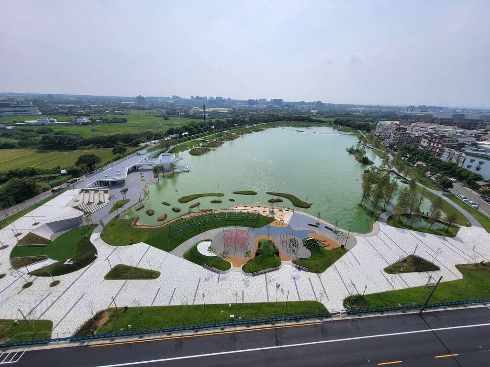

專題主題
華興池是一座位在桃園市大園區的生態埤塘公園。它原本和農田灌溉、水利系統有關，後來透過公園化與水岸改造，變成兼具休憩、環境教育與生態棲地功能的公共空間。
這份網站不是只介紹景點，而是把華興池當作一個可以觀察的地方：看它如何蓄水、如何和周邊社區連接、有哪些植物與動物可能出現，以及人在使用公園時應該怎麼兼顧保育。
用網頁整理一座埤塘的空間、歷史、生態與未來

華興池是一座位在桃園市大園區的生態埤塘公園。它原本和農田灌溉、水利系統有關，後來透過公園化與水岸改造，變成兼具休憩、環境教育與生態棲地功能的公共空間。
這份網站不是只介紹景點，而是把華興池當作一個可以觀察的地方：看它如何蓄水、如何和周邊社區連接、有哪些植物與動物可能出現，以及人在使用公園時應該怎麼兼顧保育。
從地圖、地址、周邊道路、水文位置開始，理解華興池不是孤立水池，而是地方生活和水利系統的一部分。
透過植物、動物、昆蟲、水質、池岸和排水構造，整理埤塘如何支持生物生活。
華興池從農業用途轉向休閒與教育，也面臨人流、外來種、水質和棲地維護等挑戰。